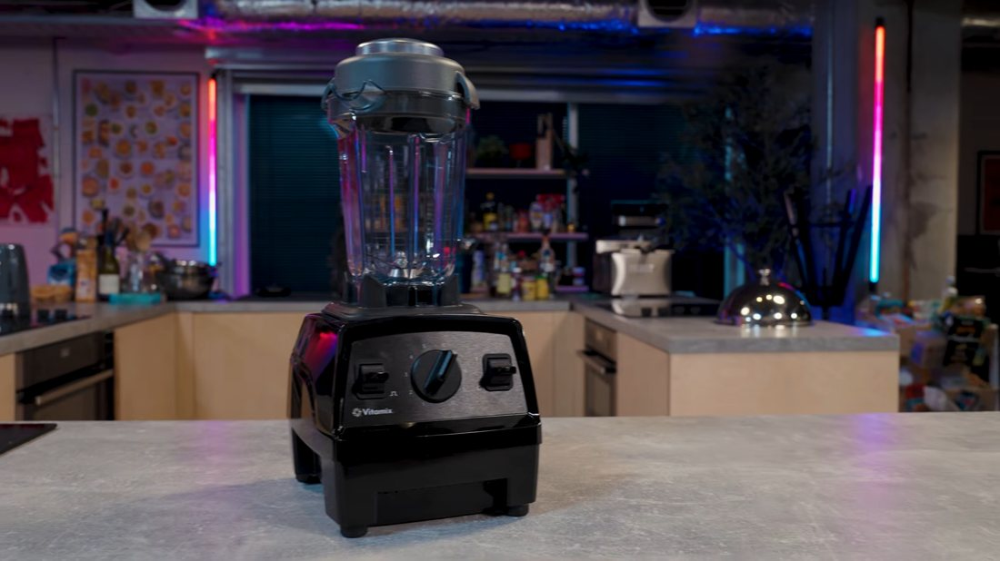
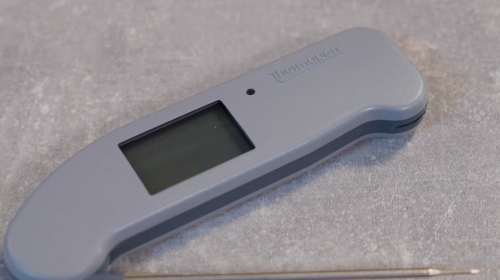
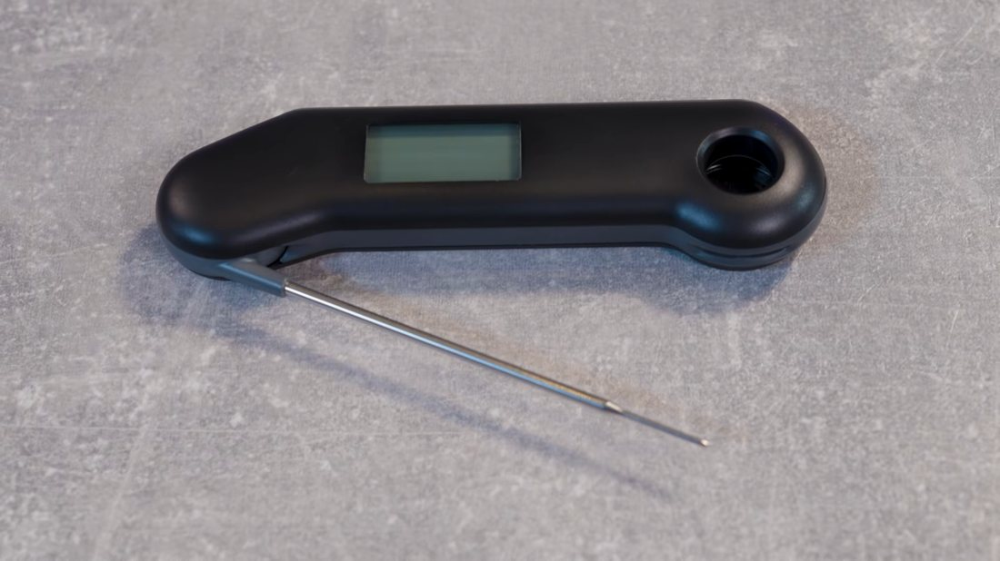
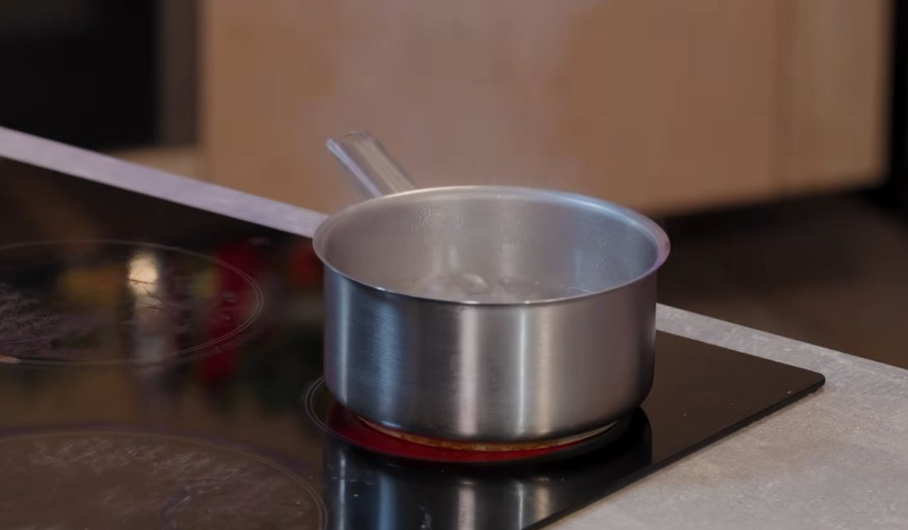
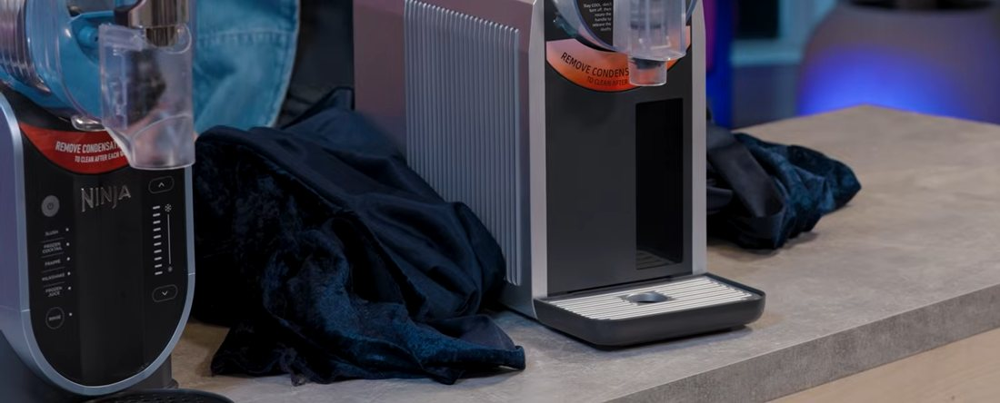
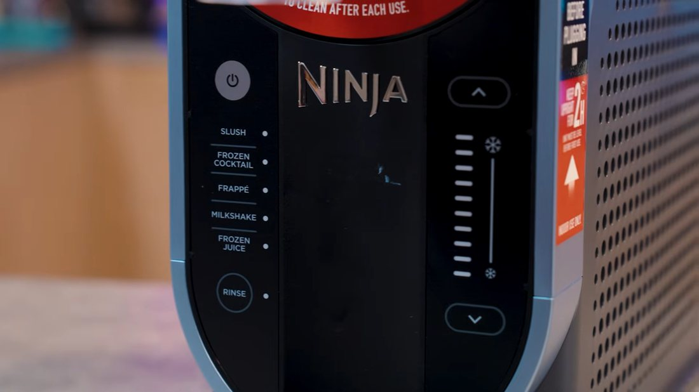
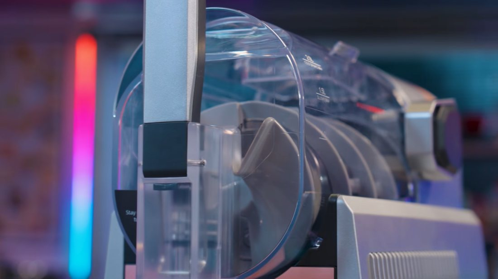
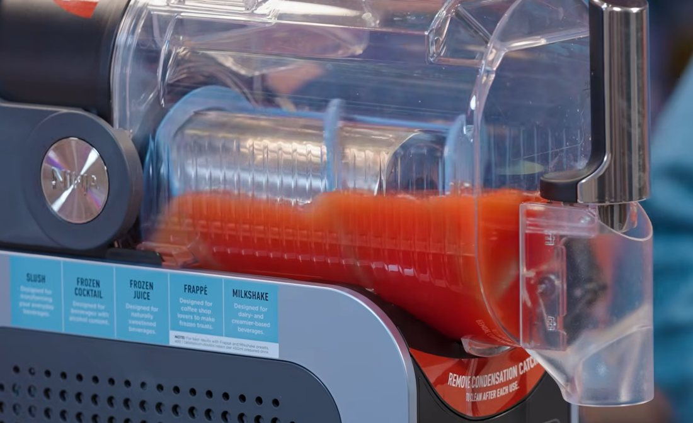

Sorted Food 把 3 组厨房电器和低价仿品放在一起测：搅拌机、探针温度计、冰沙机。视频给出价格、参数、实测读数和评分；下面按字幕拆成一份能照着核对的选购清单。

适合谁：想把「贵在哪」拆成参数、实测和售后三项，再决定要不要付品牌溢价的人。视频的主线就是逐项对照00:00:0500:21:45。
不适合谁：想直接照抄一个购买链接的人。字幕没有给出购买渠道、完整规格表，也没有给低价仿品的长期耐用数据。
视频里没说：仿品的保修条款正文、售后网点、多久会坏。搅拌机仿品只在包装和网站上被说「找不到有限保修描述」00:07:40。
把视频的 3 个章节当成 3 张对照表：搅拌机从 16 秒开始00:00:16，温度计从 8:56 开始00:08:56，冰沙机从 16:08 开始00:16:08。
价格币种按字幕原样保留：搅拌机与冰沙机用英镑，Lava Tools Javelin 的价格段落写的是 29.99 美元00:14:51。
| 组 | 大牌说法 | 仿品说法 | 你要核对什么 |
|---|---|---|---|
| 搅拌机 | Vitamix E310：10 档变速 + 脉冲、2.2 马力、30–60 秒清洁、7 年保修，386 英镑00:00:4100:00:5000:01:19 | Vlokky：10 档、4500 瓦、30–60 秒清洁，保修信息没找到，24.99 英镑00:01:4900:01:5700:06:14 | 别只比瓦数。字幕提醒马力考虑扭矩，重要不只是输入功率00:02:2600:02:32。 |
| 温度计 | Thermapen：1 秒读数、0.3°C 精度、-49.9°C 至 299°C、5 年质保、63 英镑00:09:2900:09:3500:09:39 | Javelin Pro：3–4 秒读数、0.3°C、3 年有限保修；F1 Turbo：0.5 秒、0.3°C、IP67、19.98 英镑00:10:0200:11:1800:14:55 | 读数速度、防水/防溅、挂钩或磁吸收纳，是字幕反复提到的差异00:10:4000:11:2500:15:30。 |
| 冰沙机 | Ninja Creami：5 个预设、无需冰块、最快 30 分钟，299.99 英镑00:17:4000:17:5400:21:23 | 白标仿品：6 个预设 + 奶昔功能，宣称 15 分钟，110 英镑00:17:5400:18:0300:21:33 | 按同量果汁、同温度实测用时，不照抄宣称时间00:18:1500:19:30。 |
视频做鹰嘴豆泥：鹰嘴豆、香草、芝麻酱、柠檬、大蒜、盐和胡椒00:02:45。把两台机器同时启动，跑 10 分钟，看散热、噪音、融合效果00:03:0000:03:41。
字幕说两台都很吵，但频率不同，其中一台「没那么刺耳」00:04:0500:04:15。激光测温读到 22°C，搅拌机内部读到 52°C 和 58°C；外壳和侧面摸起来没问题00:04:3000:04:3900:04:45。
结论是性能「非常相似」，真正的差别在材料、重量和坚固性00:05:3000:06:05。仿品搅拌机综合评分是 6.5 分（满分 10 分）00:08:35。
把几支探针同时插进冰淇淋，字幕给出的读数差异在 0.2 以内00:11:5000:12:20。再插进约 100°C 的沸水，比较谁先稳定00:12:3200:12:50。

Thermapen 在沸水测试里「真的不到一秒」；Javelin 标称 3–4 秒，测试者觉得更快；F1 被点名 0.5 秒00:12:5000:13:0300:13:09。

牛排测试里，中心读到 56，稍往外拉是 58.7，靠边缘是 58.600:13:3400:13:41。测试者的判断是：精度都在容差内，差别主要在速度00:14:1500:14:29。

视频用 700 毫升热带水果汁做对照，强调要在相同温度下比较00:18:1500:19:30。Ninja 从计时到完成是 17 分钟；仿品到 19 分钟还没出现完成提示，21 分钟才切到冷却模式00:19:1400:19:3700:20:19。
多出来的时间，字幕归因于果汁是室温而不是冰镇，气温高了 12 度00:19:3000:19:35。这是实测条件说明，不要直接套到家里的冰箱温度。

口感上，测试者说稠度「几乎完全一样」，但仿品颜色更浅、感觉注入了更多空气00:20:0100:20:30。价格回到品牌信任和出问题时能不能找到人00:21:45。



| 坑 | 怎么避 |
|---|---|
| 拿瓦数直接当性能 | 字幕提醒马力考虑扭矩，不能只看输入功率00:02:2600:02:32 |
| 把 10 分钟测试当成日常用法 | 字幕明确说做鹰嘴豆泥不一定要搅那么久00:05:00 |
| 忽略仿品保修 | 包装和网站上都找不到有限保修描述00:07:40 |
| 只看「1 秒 / 0.5 秒」标称 | 同时看冰淇淋、沸水、牛排三类实测，并记下容差00:12:2000:13:34 |
| 把防溅当防水 | 字幕把防水与防溅、5 年与 3 年寿命列为家庭/专业差异00:15:1500:15:20 |
| 照抄 15 分钟宣传 | 同条件实测里，Ninja 17 分钟、仿品 21 分钟00:19:1400:20:19 |
| 忽略液体起始温度 | 视频把多出的 5 分钟归因于室温果汁、气温高 12 度00:19:3300:19:37 |
「Ninja 早就抄袭了业内存在多年的技术」00:16:50：这是视频里的说法，本文不下结论。
「找到白标产品，稍作修改就变成自己的产品」00:21:05：字幕用「我认为很可能」表达推测，未给出供应链证据。
「我觉得它们是一样的」00:15:59：这是测试者的主观判断；同一段又承认防水、保修和使用寿命可能不同00:15:15。
评分口径：搅拌机仿品 6.5/10、温度计仿品 4–4.5/5、冰沙机仿品「八星」都来自字幕中的现场打分00:08:3500:15:5000:22:30，本文不换算成统一分数。